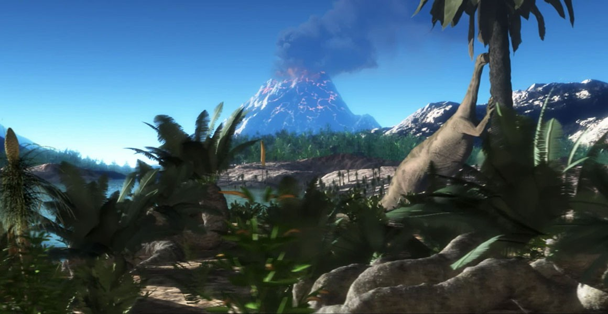
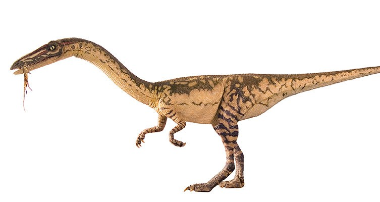
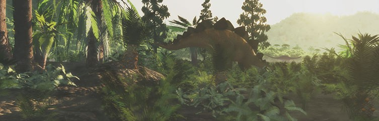
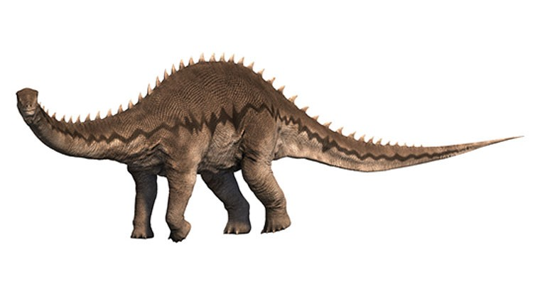
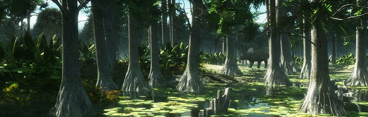

Coelophysis lived towards the end of the Triassic Period, as did these other Late Triassic dinosaurs.

Dinosaurs first appeared in the Triassic Period, around 245 million years ago
DINOSAURS
When did dinosaurs live ?
Explore the age of the dinosaurs. Discover what the prehistoric world was like and how it changed between when dinosaurs first appeared and the mass extinction at the end of the Cretaceous Period.
Non-bird dinosaurs lived between about 245 and 66 million years ago, in a time known as the Mesozoic Era. This was many millions of years before the first modern humans, Homo sapiens, appeared.
Scientists divide the Mesozoic Era into three periods: the Triassic, Jurassic and Cretaceous. During this era, the land gradually split from one huge continent into smaller ones. The associated changes in the climate and vegetation affected how dinosaurs evolved.
Triassic Period (252 to 201 million years ago)
All continents during the Triassic Period were part of a single land mass called Pangaea. This meant that differences between animals or plants found in different areas were minor.
The climate was relatively hot and dry, and much of the land was covered with large deserts. Unlike today, there were no polar ice caps.
It was in this environment that the reptiles known as dinosaurs first evolved. Reptiles tend to flourish in hot climates because their skin is less porous than, for example, mammal skin, so it loses less water in the heat. Reptile kidneys are also better at conserving water.
Jurassic Period (201 to 145 million years ago)
At the end of the Triassic Period there was a mass extinction, the causes of which are still hotly debated. Many large land animals were wiped out but the dinosaurs survived, giving them the opportunity to evolve into a wide variety of forms and increase in number.
Lush vegetation grew in the Jurassic Period, providing plenty of food for plant-eating dinosaurs
The single land mass, Pangaea, split into two, creating Laurasia in the north and Gondwana in the south. Despite this separation, similarities in their fossil records show that there were some land connections between the two continents early in the Jurassic. These regions became more distinct later in the period.
Temperatures fell slightly, although it was still warmer than today due to higher amounts of carbon dioxide in the atmosphere. Rainfall increased as a result of the large seas appearing between the land masses.
These changes allowed plants such as ferns and horsetails to grow over huge areas. Some of this vegetation became the fossil fuels that we mine today. Elsewhere there were forests of tall conifer trees such as sequoias and monkey puzzles.
The large sauropod dinosaur Diplodocus lived in the Jurassic Period. Explore other dinosaurs from the Late Jurassic.
The plentiful plant supply allowed the huge plant-eating sauropods - such as Apatosaurus, Diplodocus and Brachiosaurus - to evolve. These are some of the largest animals to have ever walked the Earth. By the end of the Jurassic their herds dominated the landscape. Sauropods became even larger in the Cretaceous.
Cretaceous Period (145 to 66 million years ago)
During the Cretaceous the land separated further into some of the continents we recognise today, although in different positions. This meant that dinosaurs evolved independently in different parts of the world, becoming more diverse.
Can you spot the dinosaur in this Cretaceous environment?
Other groups of organisms also diversified. The first snakes evolved during this time, as well as the first flowering plants. Various insect groups appeared, including bees, which helped increase the spread of flowering plants. And mammals now included tree climbers, ground dwellers and even predators of small dinosaurs.